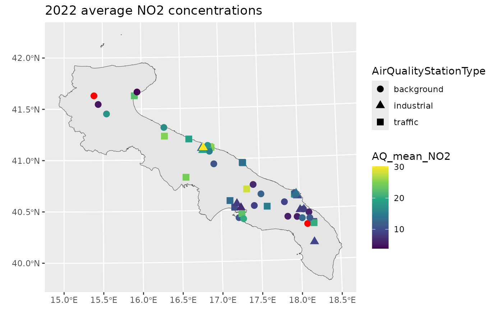
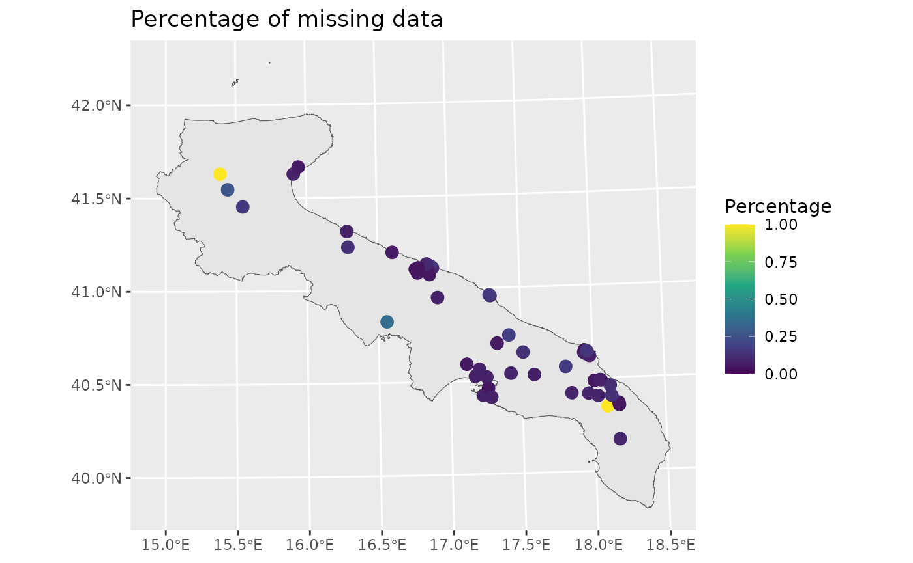
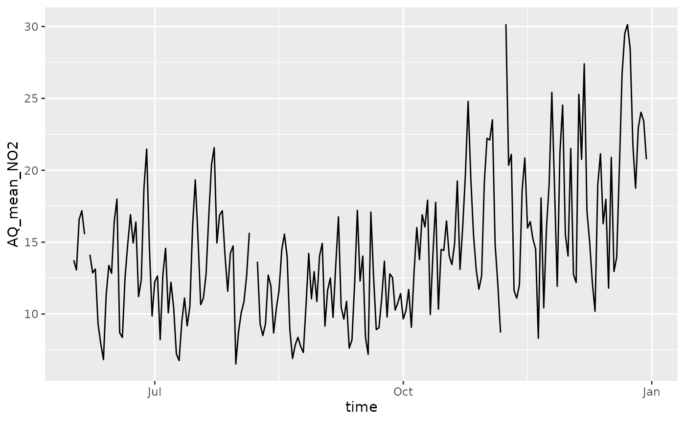
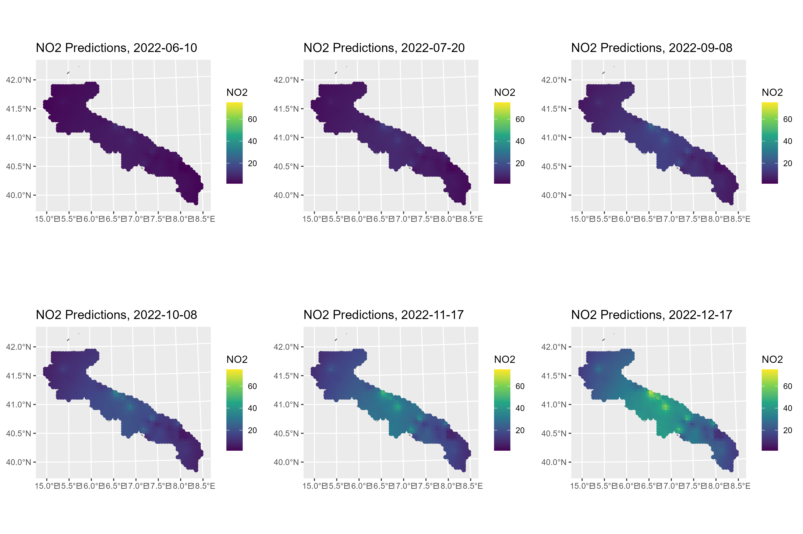

Here, we will analyze a real application. The dataset
ApuliaAQ, included within the package, contains daily
measurements of some air pollutant concentrations from ground monitoring
stations located in Apulia, Italy, from June to December 2022. In
particular, we want to predict the nitrogen dioxide (NO2)
concentrations. This example is relevant to demonstrate how the
stdglm() function works when there are missing data in the
response variable.
As usual, we start by loading the required packages.
library(STDGLM)
packages <- c("dplyr", "ggplot2", "tidyr", "ggpubr", "coda", "sf", "abind", "units")
for (package in packages) {
if (!require(package, character.only = TRUE)) {
install.packages(package)
require(package, character.only = TRUE)
}
}
#> Loading required package: dplyr
#>
#> Attaching package: 'dplyr'
#> The following objects are masked from 'package:stats':
#>
#> filter, lag
#> The following objects are masked from 'package:base':
#>
#> intersect, setdiff, setequal, union
#> Loading required package: ggplot2
#> Loading required package: tidyr
#> Loading required package: ggpubr
#> Loading required package: coda
#> Loading required package: sf
#> Linking to GEOS 3.12.1, GDAL 3.8.4, PROJ 9.4.0; sf_use_s2() is TRUE
#> Loading required package: abind
#> Loading required package: units
#> udunits database from /usr/share/xml/udunits/udunits2.xmlData Preparation
The data can be loaded using the following command. The definition of each column can be found at this link.
# load data
data(ApuliaAQ)
ApuliaAQ = ApuliaAQ %>% filter(time>='2022-06-01')
head(ApuliaAQ)
#> AirQualityStation time Longitude Latitude Altitude
#> 1 STA.IT1953A 2022-06-01 18.17361 40.16805 50
#> 2 STA.IT1687A 2022-06-01 18.09507 40.34627 10
#> 3 STA.IT2044A 2022-06-01 18.17667 40.35194 50
#> 4 STA.IT1932A 2022-06-01 18.17306 40.36444 58
#> 5 STA.IT2150A 2022-06-01 18.12500 40.40333 100
#> 6 STA.IT1666A 2022-06-01 18.02972 40.40444 10
#> AirQualityStationType AirQualityStationArea AQ_mean_NO2 AQ_mean_PM10
#> 1 industrial suburban 9.165000 NA
#> 2 background suburban NA 23.40000
#> 3 traffic urban 15.396875 29.40000
#> 4 traffic urban 6.584167 24.00000
#> 5 background rural 11.384167 25.70104
#> 6 background suburban 15.330625 29.60000
#> AQ_mean_PM2.5 CL_blh CL_lai_hv CL_lai_lv CL_rh CL_ssr CL_t2m CL_tp
#> 1 9.4 375.9880 1.728394 2.132446 70.08264 3099264 24.84413 0
#> 2 NA 616.1546 1.047241 2.083252 67.86420 2982720 25.06085 0
#> 3 12.5 375.9880 1.728394 2.132446 70.08264 3099264 24.84413 0
#> 4 8.5 375.9880 1.728394 2.132446 70.08264 3099264 24.84413 0
#> 5 NA 544.1208 1.984253 2.900024 64.76970 2982912 25.43316 0
#> 6 4.7 544.1208 1.984253 2.900024 64.76970 2982912 25.43316 0
#> CL_winddir CL_windspeed
#> 1 1 2.528502
#> 2 1 2.261226
#> 3 1 2.528502
#> 4 1 2.528502
#> 5 1 2.855337
#> 6 1 2.855337Next, we download the shapefile of Apulia region to create some maps.
if (! file.exists("confiniregionali.zip")) {
download.file(
"https://dati.puglia.it/ckan/dataset/9e105292-26d3-49b3-ae2c-e19a987886bc/resource/212e8004-5af4-467f-b910-1183bdc21730/download/confiniregionali.zip",
destfile = "confiniregionali.zip"
)
}
apulia_sf = st_read("/vsizip/confiniregionali.zip/ConfiniRegionali/", layer = "ConfiniRegionali")
#> Reading layer `ConfiniRegionali' from data source
#> `/vsizip/confiniregionali.zip/ConfiniRegionali/' using driver `ESRI Shapefile'
#> Simple feature collection with 1 feature and 3 fields
#> Geometry type: MULTIPOLYGON
#> Dimension: XY
#> Bounding box: xmin: 494422.8 ymin: 4409765 xmax: 800058.5 ymax: 4675192
#> Projected CRS: WGS 84 / UTM zone 33NNote that apulia_sf uses a Universal Transverse Mercator
(UTM) projection, given by EPSG code 32633, where the coordinates are
defined in meters. However, it is more convenient to convert them to
kilometers, as follows. We also convert the ApuliaAQ
dataframe to a simple feature object.
projUTM = "+proj=utm +zone=33 +datum=WGS84 +units=km +no_defs"
apulia_sf = st_transform(apulia_sf, projUTM)
data = ApuliaAQ %>%
st_as_sf(coords = c('Longitude', 'Latitude'), crs = 4326) %>%
st_transform(projUTM)Spatial Locations for Interpolation
st_new = st_make_grid(apulia_sf, what = "centers", cellsize = 5) %>%
st_intersection(apulia_sf)
p_new = NROW(st_new)
h_ahead = 0Exploratory Analysis
A first exploratory tool is a map of the yearly average NO2 concentrations.
yearly_avg = data %>%
group_by(AirQualityStation) %>%
summarise(AQ_mean_NO2 = mean(AQ_mean_NO2, na.rm=T),
AirQualityStation = first(AirQualityStation),
AirQualityStationType = first(AirQualityStationType),
.groups = 'drop')
ggplot() +
geom_sf(data = apulia_sf) +
geom_sf(aes(col = AQ_mean_NO2, shape = AirQualityStationType), yearly_avg, size = 3) +
scale_color_viridis_c(na.value = "red") +
labs(title = "2022 average NO2 concentrations")
The red points pinpoint those stations without any valid measurement. However, the percentage of missing data is highly variable across stations.
perc_na = data %>%
group_by(AirQualityStation) %>%
summarise(Percentage = mean(is.na(AQ_mean_NO2)),
AirQualityStation = first(AirQualityStation),
.groups = 'drop')
print(summary(perc_na$Percentage))
#> Min. 1st Qu. Median Mean 3rd Qu. Max.
#> 0.04206 0.06776 0.08411 0.13478 0.12850 1.00000
ggplot() +
geom_sf(data = apulia_sf) +
geom_sf(aes(col = Percentage), perc_na, size = 3) +
scale_color_viridis_c(limits = c(0,1)) +
labs(title = "Percentage of missing data")
Let’s now visualize the data temporally, by taking the average across space.
space_avg = ApuliaAQ %>%
group_by(time) %>%
summarise(across(where(is.numeric), ~ mean(.x, na.rm=T)),
.groups = 'drop')
ggplot(space_avg, aes(time, AQ_mean_NO2)) +
geom_line() +
theme(legend.position = 'none')
#> Warning: Removed 1 row containing missing values or values outside the scale range
#> (`geom_line()`).
In the figure above, there are small gaps indicating that there are no data for some days.
Missing observations in the response are not an issue when fitting
the model, since NA values will be estimated using the
posterior predictive distribution.
Important: the stdglm function
does handle missing data in the response, but not in the
covariates!
Model Fitting
For the purpose of the illustration, we assume that the NO2 concentrations follows a Gaussian distribution where the mean is a simple linear spatio-temporal trend, and the variance has a separable spatio-temporal structure (with exponential spatial correlation function, and AR(1) temporal dependence).
Before actually fitting the model, some preliminaries are required to organize the data in the correct form.
p = length(unique(data$AirQualityStation)) # 51
t = length(unique(data$time)) # 365
times = unique(data$time)
# distance matrix
D = drop_units(st_distance(yearly_avg))
# response variable (log scale)
y = matrix(scale(log(data$AQ_mean_NO2)), p, t)
# covariates
X = abind(
matrix(1, p, t),
along = 3)
which(is.na(X)) # NA's are not allowed here!
#> integer(0)
Z = abind(
matrix(st_coordinates(data)[,1]/1e3, p, t),
matrix(st_coordinates(data)[,2]/1e3, p, t),
matrix((st_coordinates(data)[,1]/1e3)^2, p, t),
matrix((st_coordinates(data)[,2]/1e3)^2, p, t),
matrix(as.numeric(data$time)/2e4, p, t),
along = 3)
which(is.na(Z)) # NA's are not allowed here!
#> integer(0)
# # covariates
# X = abind(
# matrix(1, p, t),
# matrix(scale(data$CL_t2m), p, t),
# matrix(scale(data$CL_windspeed), p, t),
# matrix(scale(data$CL_ssr), p, t),
# matrix(scale(data$CL_blh), p, t),
# along = 3)
# which(is.na(X)) # NA's are not allowed here!
# Z = model.matrix(~AirQualityStationType, data)[,-1, drop=FALSE] # types industrial and traffic wrt backgroud
# dim(Z) = c(p, t, NCOL(Z)) # reshape in the correct way
# Z = abind(Z,
# matrix(scale(data$Altitude), p, t),
# matrix(scale(as.numeric(data$time)), p, t),
# along = 3)
# which(is.na(Z)) # NA's are not allowed here!The creation of some object for spatial interpolation is also required, as shown below.
ii = floor(seq(1, p_new+1, by = 10))
lii = length(ii)
D_pred = D_cross = blocks_indices = vector('list', lii-1)
for (i in 2:lii) {
Dalltemp = drop_units(st_distance(
c(st_geometry(yearly_avg), st_geometry(st_new[ii[i-1]:(ii[i]-1), ])))
)
D_pred[[i-1]] = unname(Dalltemp[-(1:p), -(1:p), drop=FALSE])
D_cross[[i-1]] = unname(Dalltemp[1:p, -(1:p), drop=FALSE])
blocks_indices[[i-1]] = ii[i-1]:(ii[i]-1)
}
Xpred = abind(
matrix(1, p_new, t),
along = 3)
Zpred = abind(
matrix(st_coordinates(st_new)[,1]/1e3, p_new, t),
matrix(st_coordinates(st_new)[,2]/1e3, p_new, t),
matrix((st_coordinates(st_new)[,1]/1e3)^2, p_new, t),
matrix((st_coordinates(st_new)[,2]/1e3)^2, p_new, t),
outer(rep(1, p_new), as.numeric(times)/2e4),
along = 3)
# Set the total number of iterations
nrep <- 3000
# Set the total number of burn-in iterations
nburn <- 3000
# How many times to report progress
print.interval <- 100
mod <- stdglm(y=y, X=X, Z=Z,
blocks_indices=blocks_indices,
W=D, W_pred=D_pred, W_cross=D_cross,
X_pred=Xpred, Z_pred=Zpred,
interaction = FALSE,
nrep = nrep, nburn = nburn,
print.interval = print.interval,
ncores = min(parallel::detectCores()-1, 6), # Set number of cores for parallel processing
keepLogLik = FALSE) # to save memoryPlotting the Results
To create maps of NO2 concentrations over Apulia, we can use the
predict method. Here, the posterior means are shown for
some selected days.
Y_pred = predict(mod, type = 'response_df', Coo_sf_pred = st_geometry(st_new))
mean_y = mean(log(data$AQ_mean_NO2), na.rm=T)
sd_y = sd(log(data$AQ_mean_NO2), na.rm=T)
Y_pred$NO2 = exp(Y_pred$Mean*sd_y + mean_y)
rr = range(Y_pred$NO2)
gglist = list()
ind = 1
for (i in c(10, 50, 100, 130, 170, 200)) {
gglist[[ind]] =
ggplot(Y_pred %>% filter(Time==i)) +
geom_sf(data = apulia_sf, fill = "white") +
geom_sf(aes(color = NO2)) +
scale_color_viridis_c(limits=rr) +
labs(title = paste0("NO2 Predictions, ", times[i]))
ind = ind+1
}
ggarrange(plotlist=gglist, ncol=3, nrow=2)
ggsave("pred_no2_apulia.png", width = 30, height = 20, units = "cm")